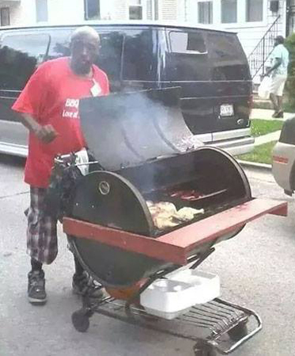
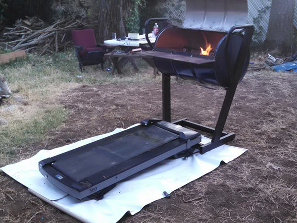
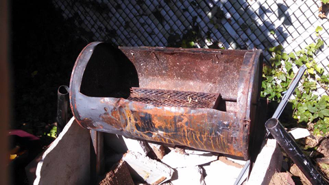
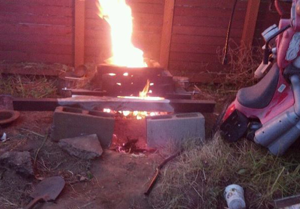

Do Not Do It Yourself
Do Not Do It Yourself
A forced air oven capable of melting metal and feeding your friends.
This project has had many incarnations, and tasty failures. They have been slowly developing in quality over time. The original goals were to reach a sucessful point we to melt metal and glass for forging and the art of glass blowing. We are also slowly refining our skills for charcoal production, biomass gasification, and steam engines. We should make this project available for nautical use, and give it wheels for mobility too.
 The forth barbecue example is to be made from a shopping cart and a drum. It is an adapted idea from a popular internet meme. We intend to do a service to mankind and make an instructional video on how too produce one of these miraculous devices.
Come back soon!
 The third barbecue was made to feed guests for the Atonomus Mutant Festival meat camp. As per request of Tony it was made from a 55 gallon drum, had a proffesional look, and wheels. It was made from a drum, and treadmill parts and was named the "Treadgrill"
It is still in use.
 The second forced air barbecue was made to feed guests at a birthday party. It was the smaller drum from the biomass VW failure cut open with hinges installed and a grate for food, there was an opening on the bottem and a 2hp wet dry vac attached. It made food in seconds, but guests complained of the vacuume noise and others did not like to food to be hot on the outside, cold on the inside. After several months, the drum was adapted for the head of the Willamette River Sea Monster it went out on the water, and was lost under the waves.
It sleeps there now.

The original kiln was was a little more than a pile of brick and mud. When in use, it didn't get hot enough to melt glass. An auxillary air pump was attached to it. It became HOT and messy. Ash got everwhere. The glass blowing attempts made were ugly fused and cracked blobs.
However, when food was introduced at 1000 or more degrees, it cooked in seconds, and metal pots became red hot and discolored. Ulimately the project was a failure that involved food and drinks.